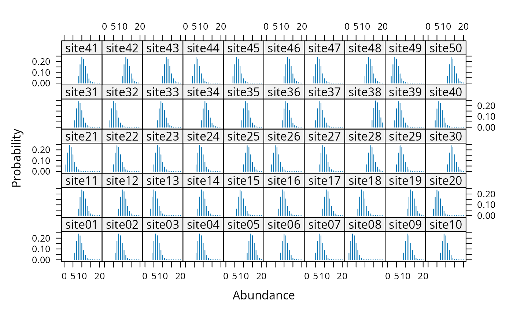
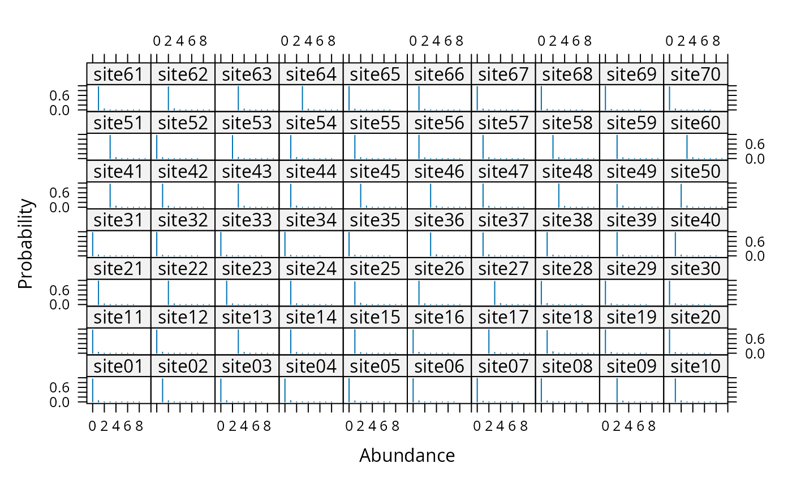

multinomPois.RdFit the multinomial-Poisson mixture model to data collected using survey methods such as removal sampling or double observer sampling.
multinomPois(formula, data, starts, method = "BFGS",
se = TRUE, engine=c("C","R","TMB"), ...)This function takes advantage of the closed form of the integrated likelihood when a latent Poisson distribution is assumed for abundance at each site and a multinomial distribution is taken for the observation state. Many common sampling methods can be framed in this context. For example, double-observer point counts and removal sampling can be analyzed with this function by specifying the proper multinomial cell probablilities. This is done with by supplying the appropriate function (piFun) argument. removalPiFun and doublePiFun are supplied as example cell probability functions.
unmarkedFit object describing the model fit.
Royle, J. A. (2004). Generalized estimators of avian abundance from count survey data. Animal Biodiversity and Conservation, 27(1), 375-386.
Royle, J. A., & Dorazio, R. M. (2006). Hierarchical Models of Animal Abundance and Occurrence. Journal Of Agricultural Biological And Environmental Statistics, 11(3), 249.
double right-hand side formula for detection and abundance covariates, in that order.
unmarkedFrame supplying data.
vector of starting values.
Optimization method used by optim.
logical specifying whether or not to compute standard errors.
Either "C" to use fast C++ code or "R" to use native R code during the optimization.
Additional arguments to optim, such as lower and upper bounds
# Simulate independent double observer data
nSites <- 50
lambda <- 10
p1 <- 0.5
p2 <- 0.3
cp <- c(p1*(1-p2), p2*(1-p1), p1*p2)
set.seed(9023)
N <- rpois(nSites, lambda)
y <- matrix(NA, nSites, 3)
for(i in 1:nSites) {
y[i,] <- rmultinom(1, N[i], c(cp, 1-sum(cp)))[1:3]
}
# Fit model
observer <- matrix(c('A','B'), nSites, 2, byrow=TRUE)
umf <- unmarkedFrameMPois(y=y, obsCovs=list(observer=observer),
type="double")
#> Warning: obsCovs contains characters. Converting them to factors.
fm <- multinomPois(~observer-1 ~1, umf)
# Estimates of fixed effects
e <- coef(fm)
exp(e[1])
#> lambda(Int)
#> 9.570278
plogis(e[2:3])
#> p(observerA) p(observerB)
#> 0.5433844 0.3615615
# Estimates of random effects
re <- ranef(fm, K=20)
#ltheme <- canonical.theme(color = FALSE)
#lattice.options(default.theme = ltheme)
plot(re, layout=c(10,5))

## Real data
data(ovendata)
ovenFrame <- unmarkedFrameMPois(ovendata.list$data,
siteCovs=as.data.frame(scale(ovendata.list$covariates[,-1])),
type = "removal")
(fm1 <- multinomPois(~ 1 ~ ufc + trba, ovenFrame))
#>
#> Call:
#> multinomPois(formula = ~1 ~ ufc + trba, data = ovenFrame)
#>
#> Abundance:
#> Estimate SE z P(>|z|)
#> (Intercept) 0.102 0.119 0.864 0.388
#> ufc 0.100 0.126 0.794 0.427
#> trba -0.171 0.135 -1.262 0.207
#>
#> Detection:
#> Estimate SE z P(>|z|)
#> 0.288 0.233 1.24 0.217
#>
#> AIC: 326.1387
# Detection probability for a single pass
backTransform(fm1, type="det")
#> Backtransformed linear combination(s) of Detection estimate(s)
#>
#> Estimate SE LinComb (Intercept)
#> 0.571 0.057 0.288 1
#>
#> Transformation: logistic
# Detection probability after 4 removal passes
rowSums(getP(fm1))
#> [1] 0.9662559 0.9662559 0.9662559 0.9662559 0.9662559 0.9662559 0.9662559
#> [8] 0.9662559 0.9662559 0.9662559 0.9662559 0.9662559 0.9662559 0.9662559
#> [15] 0.9662559 0.9662559 0.9662559 0.9662559 0.9662559 0.9662559 0.9662559
#> [22] 0.9662559 0.9662559 0.9662559 0.9662559 0.9662559 0.9662559 0.9662559
#> [29] 0.9662559 0.9662559 0.9662559 0.9662559 0.9662559 0.9662559 0.9662559
#> [36] 0.9662559 0.9662559 0.9662559 0.9662559 0.9662559 0.9662559 0.9662559
#> [43] 0.9662559 0.9662559 0.9662559 0.9662559 0.9662559 0.9662559 0.9662559
#> [50] 0.9662559 0.9662559 0.9662559 0.9662559 0.9662559 0.9662559 0.9662559
#> [57] 0.9662559 0.9662559 0.9662559 0.9662559 0.9662559 0.9662559 0.9662559
#> [64] 0.9662559 0.9662559 0.9662559 0.9662559 0.9662559 0.9662559 0.9662559
# Empirical Bayes estimates of abundance at first 25 sites
# Very low uncertainty because p is very high
plot(ranef(fm1, K=10), layout=c(10,7), xlim=c(-1, 10))
